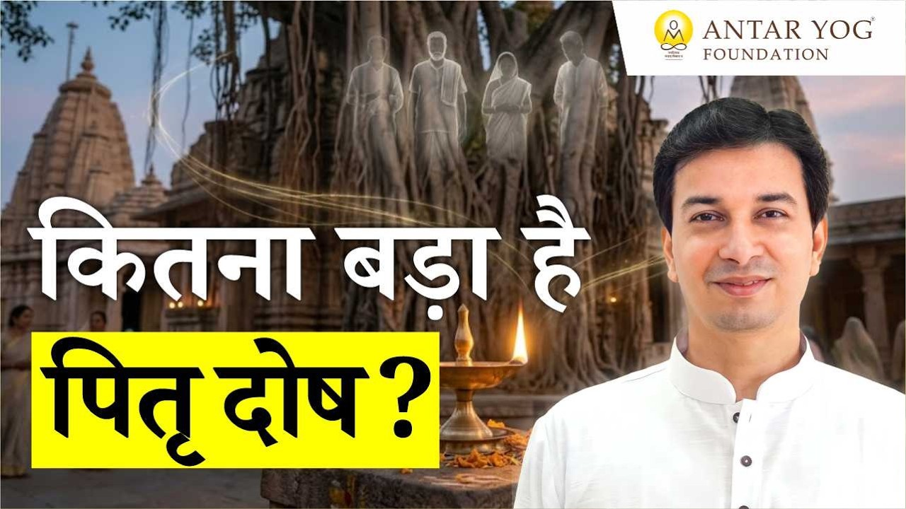

एक बार श्राद्ध कर दिया, तो काफ़ी नहीं?
बहुत से लोग सोचते हैं कि पितृ मुक्ति (पूर्वजों की मुक्ति के लिए किया जाने वाला कर्म) एक बार कर दी, तो बात खत्म। तर्क सीधा है: "एक बार छुड़ा दिया, तो छुड़ा दिया। वे मुक्त हो गए, तो हर साल क्यों करूं?"
गुरुदेव इस तर्क को नकारते नहीं। वे कहते हैं, हां, यह तर्क अपनी जगह ठीक है। यदि दादाजी मुक्त हो गए, तो पूरे घराने के लिए मुक्त हो गए।
लेकिन फिर शास्त्र हर वर्ष करने को क्यों कहता है? क्या शास्त्र लिखने वाले नासमझ थे? नहीं। असल बात यह है कि हमें पता ही नहीं कि पितर कहां-कहां बैठे हैं, और नए-नए पितर कैसे बनते रहते हैं।
पितृ दोष और पितृ लाभ: दोनों सच हैं
पितृ दोष (पूर्वजों के कर्मों से आया बोझ) और पितृ ऋण (पूर्वजों के प्रति हमारा कर्ज़), ये दो अलग बातें हैं। और इनके साथ एक तीसरी बात भी है: पितृ लाभ।
गुरुदेव एक सरल उदाहरण देते हैं। जैसे कोई अपनी संतान के लिए बैंक में दो करोड़ छोड़कर जा सकता है, वैसे ही यदि पूर्वज अच्छे कर्म करके गए हैं, तो उसका लाभ भी मिलता है। और उनके कर्मों से कष्ट भी आ सकता है।
पहला नियम: आपकी प्रगति आपके हाथ में
सब कुछ पूर्वजों पर नहीं डाला जा सकता। आप इस वर्तमान जन्म में हैं, और आपके अपने कर्म भी हैं। आप अपने लिए स्वयं उत्तरदायी हैं।
तो पहला नियम: आपकी प्रगति आपके अपने हाथ में है। पितरों की बात उसके बाद आती है।
अट्ठानवे प्रतिशत, और किसी को पता नहीं
कुछ लोग यह ऋण चुका देते हैं। कुछ के पूर्वजों ने ऐसा कोई बोझ छोड़ा ही नहीं। लेकिन गुरुदेव कहते हैं कि कलियुग में लगभग अट्ठानवे प्रतिशत लोग पितृ दोष से पीड़ित हैं, और उन्हें इसका पता ही नहीं।
इसका संकेत भी वे देते हैं: कलियुग में मुक्ति की दर बहुत कम है। संसार की जनसंख्या बढ़ती जा रही है, यानी लोग मुक्त नहीं हो रहे, और पशु भी जन्म लेते-लेते मनुष्य योनि तक आ रहे हैं।
क्या आपने कभी सोचा है कि आपके जीवन की कुछ उलझनें शायद केवल आपकी नहीं हैं?
सात पीढ़ियों का वृक्ष
अब एक चित्र की कल्पना कीजिए। सबसे नीचे आप हैं। एक पीढ़ी ऊपर माता-पिता, वे भी पितर हैं, और उनका कर्म भी आपको भोगना पड़ता है। फिर दादा-दादी, और दोनों ओर के: माता की ओर के भी, पिता की ओर के भी। फिर परदादा, और उनके ऊपर, और ऊपर: सात पीढ़ियों तक। आचार्य जी कहते हैं कि सात पीढ़ी पीछे तक के पितरों का कुछ न कुछ कर्म आपके ऊपर आएगा।
ये कर्म हमें क्यों भोगने पड़ते हैं? क्या वे हमें श्राप देते हैं, या वे स्वयं शापित होते हैं? गुरुदेव कहते हैं कि यह विषय इतना बड़ा है कि एक घंटे में नहीं, पूरे शिविर में समझाया जाता है।
नाम याद नहीं, तो क्या वे थे ही नहीं?
माता-पिता का नाम सबको याद है। दादा-दादी का शायद बहुतों को। परदादा का? उनके दादा का? उसके ऊपर? आचार्य जी कहते हैं कि आप नहीं जानते, इसका अर्थ यह नहीं कि वे नहीं थे। वे थे, इसीलिए तो आप हैं। परदादा अपने आप नहीं आ गए थे। ऊपर एक पूरा वृक्ष है, हम बस उसे भूल गए हैं।
और यह वृक्ष सीधी रेखा नहीं है। श्राद्ध की नामावली (पितरों के नामों की सूची) में हम पिता की ओर के चार-पांच नाम लिखते हैं। पर माता की ओर के भी हैं। हर पीढ़ी पर दो विभाजन, फिर उनसे और शाखाएं। कितने सारे पितरों का ऋण आप पर हो सकता है!
पिछले जन्म के पितर भी आपके ही हैं
अब बात और गहरी होती है। गुरुदेव के शिविर में हिंदू, मुस्लिम, ईसाई, जैन, सभी धर्मों के लोग आते हैं, क्योंकि मृत्यु सबके लिए समान है, तो यह सिद्धांत भी सबके लिए समान है।
क्या कोई कह सकता है कि पिछले जन्म में भी वह इसी धर्म में था? शास्त्र कहता है, पिछले जन्म में आप कोई सलमान, वसीम या कासिम हो सकते थे, और आपके पूर्वज सलमा, अब्दुल कादिर, वकार या आयशा। किसी और जन्म में आप माइकल, पिंटो, ग्रेसी या जॉर्ज हो सकते थे।
गुरुदेव स्पष्ट करते हैं कि यह केवल उदाहरण है। हो सकता है सातों जन्म एक ही धर्म में हुए हों। बात धर्म की नहीं, इस सत्य की तीव्रता समझाने की है।
उस जन्म में आपकी मृत्यु हुई, पर वह वृक्ष समाप्त नहीं हुआ। उसकी पीढ़ियां आज भी कहीं जीवित हो सकती हैं, जिन्हें आप पहचान भी नहीं पाएंगे। और वहां के पितर भी आपके ही पितर थे। आचार्य जी बताते हैं कि सात जन्मों का सब कुछ हम अपने साथ ले जाते हैं।
क्षैतिज और ऊर्ध्व: एक ही यात्रा
गुरुदेव इसे दो दिशाओं में समझाते हैं:
- क्षैतिज प्रवास (horizontal journey): एक जन्म में पीढ़ियों का फैलाव
- ऊर्ध्व प्रवास (vertical journey): जन्म-जन्मांतर की श्रृंखला
दोनों आपकी ही यात्रा हैं। वहां के सारे कर्म इस अंतिम मन के संस्कार (गहरे छाप) में आ जाते हैं, और जन्म उसी दोष को लेकर होता है। यही कारण है कि एक होता है दोष, और एक होता है ऋण।
पर माया में हम इतने अटक गए हैं कि यह समझ ही नहीं आता कि "वह भी मैं ही था।"
उनचास गुना भार
अब गणित देखिए। सात पीढ़ियां, और सात जन्म।
हर मनुष्य कुल उनचास गुना पितरों का नकारात्मक कर्म अपने सिर पर लेकर चलता रहता है। और गुरुदेव कहते हैं कि यह आरेख भी अधूरा है, इसकी शाखाएं और आगे जाती हैं।
अगर पितरों का यह वृक्ष इतना विशाल है, तो क्या एक बार का श्राद्ध सचमुच पर्याप्त हो सकता है?
यह ज्ञान आता कहां से है?
गुरुदेव कहते हैं कि वे एक भी वचन अपना नहीं बोलते, सब शास्त्रों के वचन हैं। पर यह किसी पुस्तक में नहीं मिलता। यह ध्यान अवस्था, मुक्त अवस्था और समाधि अवस्था में दिखता है, और ज्ञान चक्षु (आंतरिक दिव्य दृष्टि) से आरेख के रूप में दिया जाता है।
मुक्त भी आपको ही करना है
ये इतने सारे जो हैं, सब आपके ही पूर्वज हैं। और इन्हें मुक्त करने की ज़िम्मेदारी भी आपकी ही है।
मुख्य बातें
- पितृ दोष, पितृ ऋण और पितृ लाभ तीनों वास्तविक हैं; पूर्वजों के अच्छे कर्म लाभ भी देते हैं
- पहला नियम: आपकी प्रगति आपके अपने हाथ में है
- कलियुग में लगभग अट्ठानवे प्रतिशत लोग पितृ दोष से पीड़ित हैं, पर जानते नहीं
- सात पीढ़ियों तक के पूर्वजों का कर्म, माता और पिता दोनों ओर से, हम पर आता है
- नाम याद न होने का अर्थ यह नहीं कि वे नहीं थे; वे थे, इसीलिए हम हैं
- पिछले सात जन्मों के पितर भी हमारे ही हैं, चाहे वे किसी भी धर्म के रहे हों
- सात पीढ़ी गुणा सात जन्म: उनचास गुना पितरों का कर्म हर मनुष्य ढोता है
- इसीलिए शास्त्र हर वर्ष पितृ कर्म करने को कहता है, और इन्हें मुक्त करना हमारा ही दायित्व है
